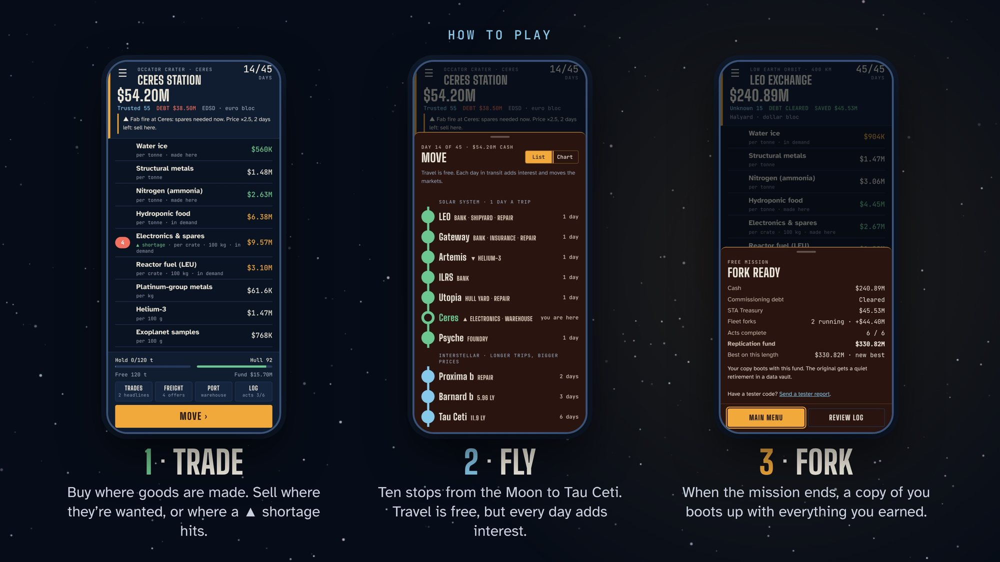
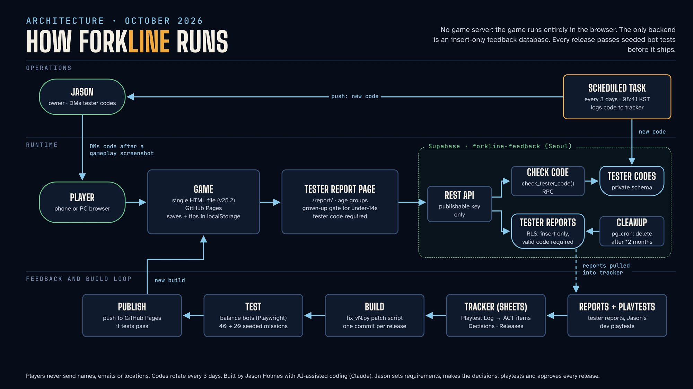
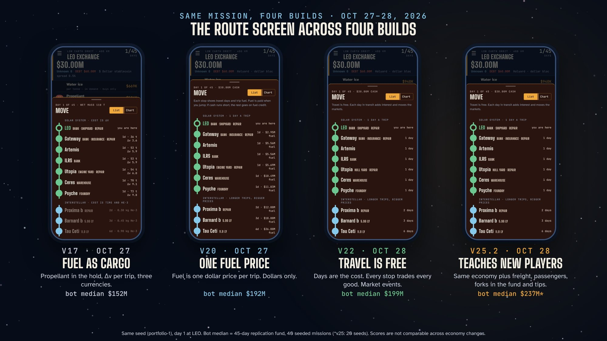
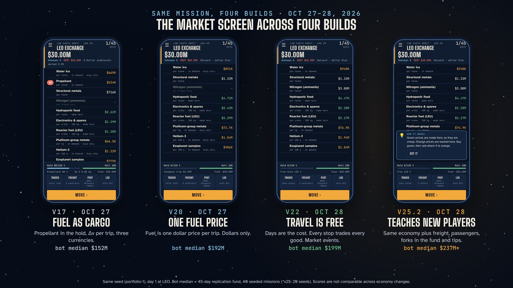

Goal
Classic buy-low, sell-high trading games have a great loop and very little depth. I wanted one that teaches something real: distance and time in space, how prices respond to supply, and what debt costs a business. It had to work for players as young as 8, so it targets an E for Everyone rating.
It's also the first product I'm taking all the way to launch, on Google Play and the web with one login, as proof of how I build systems: requirements first, every decision logged, every change tested before it ships.
The game
You run a freight probe that starts with a $60M loan. You trade across ten stops, from low Earth orbit to Tau Ceti. Travel is free, but every day adds interest and moves the markets. When the mission ends, a copy of you boots up with everything you earned.
- Market events grow from rumors into shortages or gluts, then worsen, spread, rebound or fade.
- Shipper freight and passenger contracts ride alongside your own cargo, so a full hold is a planning problem.
- Prices from the stars arrive days old because of light-lag.
- Banks, insurance, a bonded warehouse and a fork foundry give every stop a role.
- Short tips teach each idea the first time it matters, capped so they never stack up.

System
There is no game server. The game is a single HTML file on GitHub Pages; saves, records and tip state stay in the player's browser. The only backend is a feedback database.
- Tester reports go to an insert-only database. Row-level security accepts a report only with a valid tester code, and nothing can be read back publicly.
- Tester codes live in a private schema and rotate every 3 days through a scheduled task that also logs the code and notifies me.
- Privacy by design: no names, emails or locations are collected; players under 14 need a grown-up's OK; reports delete themselves after 12 months.

Testing
Every gameplay change runs against the previous version on the same seeds before it ships: 40 missions with a trading bot and 20 with a contract-only bot that models a cautious beginner. Results go into a balance-test log with a pass or fail verdict.
| Problem | Before | After | Build |
|---|---|---|---|
| Contract exploit windfall | $102.7M | $1.6M | v8 |
| Beginner path ending in debt | 11 of 20 runs | 0 of 20 | v9 |
| Stranding scenarios with no way out | 4 of 4 | 0 of 4 | v9 |
| Best Trades profit estimate error | −$11M to −$32M | within $0.8M | v11 |
| Goods vanishing overnight | 10.3% | 0% | v14 |
| Median daily price move | 13.4% | 2.3% | v14 |
| Best-route margin | 160–1,070% | 35–62% | v16 |
| Bot missions ending negative | 6 of 40 | 0 of 40, every build since v20 | v20–v25 |
From v20 on, every economy change was tuned back into a fixed target: a median 45-day result of $150M–$250M with no losing runs. Medians since then: $192M, $210M, $199M, $263M (5% over the band by design, after freight and passengers added a second income stream) and $237M.
Four builds, same mission
The same seed and screen in four versions shows how the design moved from physics accuracy toward clear decisions for the player.


From report to fix
Every playtest finding becomes a tracked action with an owner and a release. Ten findings from development playtests shipped, each on the day it was reported.
| Finding | Fix | Shipped |
|---|---|---|
| Best Trades profit far below actual | Per-trade profit; trip cost shown once | v11 |
| Forecasts wrong on arrival; buy Max showed 0 | Stable trend-based markets; Max fixed | v14 |
| $103M cash but a $6.8M score, unexplained | Loans and savings shown in the header | v15 |
| A full hold stranded the probe | Max leaves room; help names the real block | v19 |
| Fuel costs breaking the economy | One fuel price, then no fuel cost | v20, v21 |
| Debt still growing; thin margins | A market at every stop; event trees | v22 |
| Contracts impossible to fill in time | Fillable requests; freight and passengers | v23 |
| Building forks lowered the score | Forks count toward the score, less wear | v24 |
| New players miss services and milestones | Notices system with 16 tips | v25 |
| First outside tester (age 8–12): didn't know the goal; three words unclear | "How to play" card; plain-word explanations | Queued |
Three decisions
Removing fuel cost
- Problem
- Fuel was modeled as cargo with real delta-v. It caused a run of stranding bugs across ten builds and consumed 58% of gross trade income, so players managed fuel instead of trading.
- Options
- Fix fuel-as-cargo again; simplify to one price per trip; remove it.
- Decision
- Simplify, then remove. A trip now costs days: interest, markets that move and deadlines that close.
- Evidence
- Removing fuel on the old price bands pushed the median to $548M. Narrowing the bands brought it to $210M with 0 of 40 losing runs; the beginner path reached $63M with 0 of 20.
- Trade-off
- Less physics in moment-to-moment play. The rocket equation moved into the in-game reference as learning content.
A tester code enforced by the database
- Problem
- The report page is public. Bots or trolls could pollute the data, and collecting names or emails would add privacy and under-14 consent burden.
- Options
- An open form with a captcha; player accounts; a code sent after a player shares a gameplay screenshot.
- Decision
- A rotating code checked by row-level security, not by the page. Rotation is automated every 3 days.
- Evidence
- SQL tests: missing and wrong codes blocked, valid code accepted, codes unreadable publicly. Security advisor clean.
- Trade-off
- The screenshot step lowers volume. Accepted for data quality.
Counting forks toward the score
- Problem
- In a development playtest, building three forks left the score at $154M against a $263M bot median. A core feature punished players for using it.
- Options
- Count nothing; count full build cost; count build cost less wear.
- Decision
- Build cost less wear: 1/60 per day in service, never below 20% salvage value.
- Evidence
- Full cost turned forks into free money, about +$120M for three forks built on day 5. With wear, bot scores were unchanged and only fork builders' scores rose.
- Trade-off
- Slightly more complex scoring, shown on the end screen and explained in the in-game reference.
Working with AI
Forkline is built with AI-assisted coding (Claude). The split of work is deliberate:
- My part: requirements, playtests, every logged decision, release approval, and the call on what ships and what waits.
- The AI's part: implementing each change as a versioned patch script, writing the bot test harness, and reporting results against the targets I set.
- The controls: a tracker with actions, decisions, releases and balance tests; seeded before-and-after tests on every gameplay change; one commit per release.
It's the same method I apply to compliance and documentation systems for small federal contractors: the AI does the volume, and the system keeps it accountable.
What's next
- Public playtest: tester codes by direct message after a gameplay screenshot; testers whose feedback ships are credited in the game.
- Ship the queued fixes from the first outside tester report.
- Launch gate: Google Play work starts once 20 verified testers have each filed a report, with players in every age group (8–12, 13–17, 18+) and an average clarity score of at least 4 out of 5.
- Then accounts and cloud saves, Google Play, and a web version with one login.
Last updated October 28, 2026. Numbers come from the project tracker's balance-test and release logs.